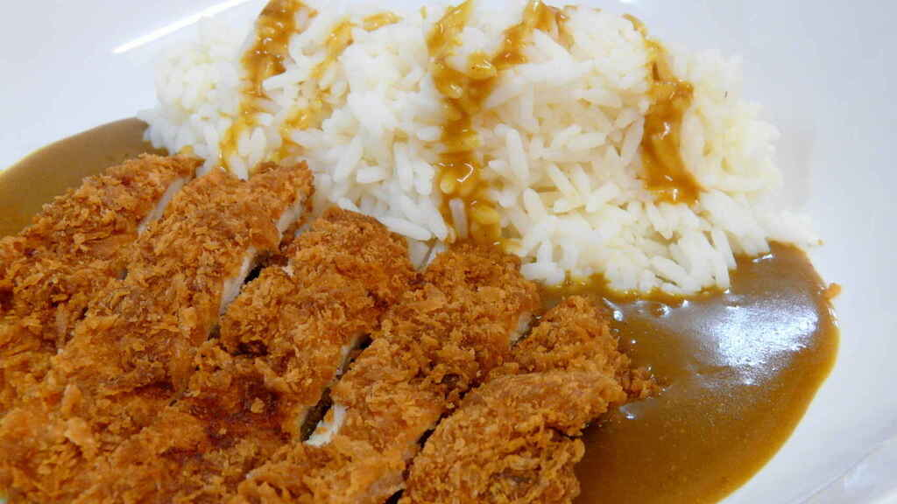

Torikatsu

Traditional Japanese fried chicken "Torikatsu"
Also know as "katsu chicken", it's one of the must-do for an asian food lover, with a shower of strong flavors and an exiting crisp sound, you should definitely try it!
Ingredients
- Chicken breast
- 200g all-purpose fluor
- 250g panko bread crumbs (or regular bread crumbs)
- 2 eggs
- Salt and pepper to taste
- Spices to taste
- Vegetable oil for frying
Preparation steps
- Cut the chicken breasts into cutlets.
- Season the chicken breasts on both sides with salt and pepper.
- Place the flour, egg and panko crumbs into separate shallow dishes.
- Coat the chicken breasts in flour, shaking off any excess.
- Dip them into the egg, and then press into the panko crumbs until well coated on both sides.
- Heat 1/4 inch of oil in a large skillet over medium-high heat.
- Place chicken in the hot oil, and cook 3 or 4 minutes per side, or until golden brown.
- Let's try it! Yum, yum, yum...
- It's a total success!!!
You can also accompany it with rice or Japanese curry.
Thanks for reading this, it was a fun and really tasty travel, see you until a next recipe!
Return To Top
Go Back